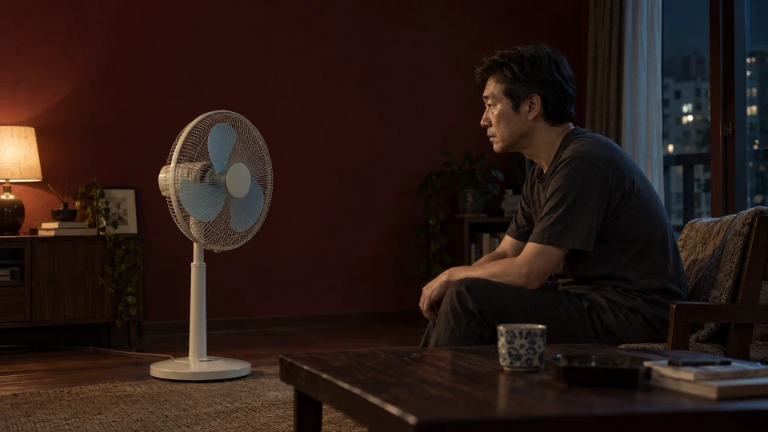
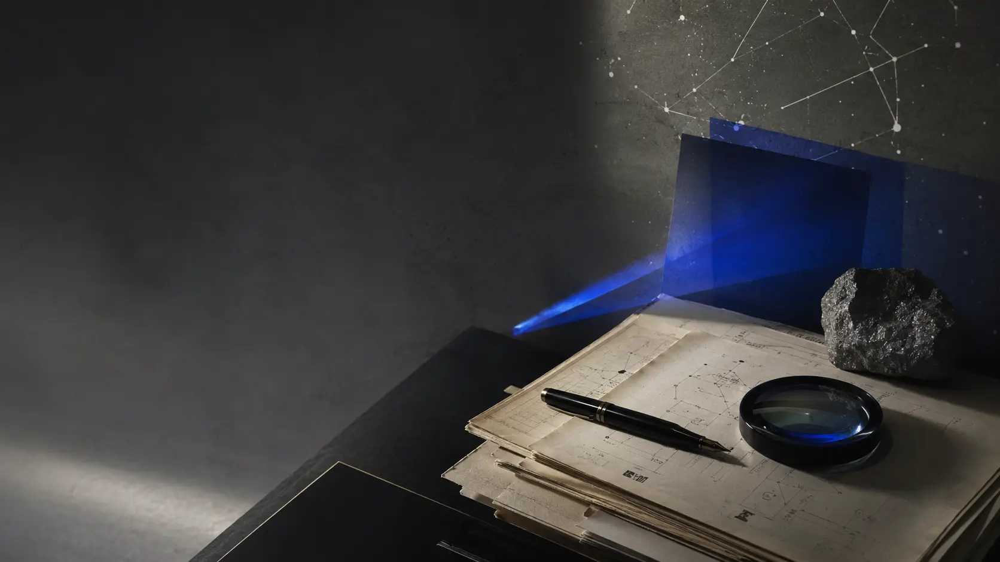
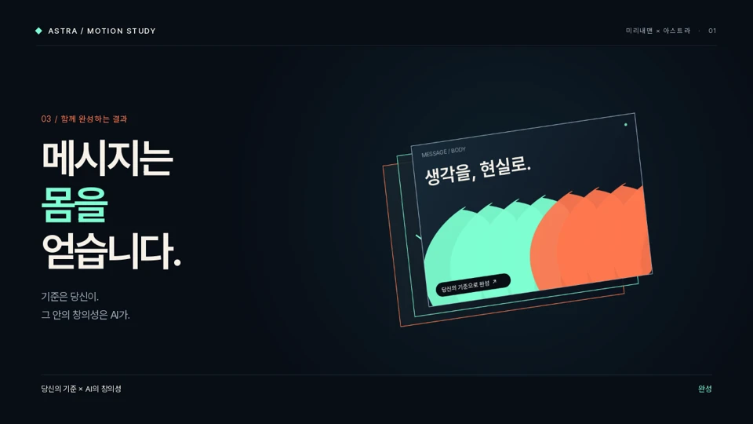
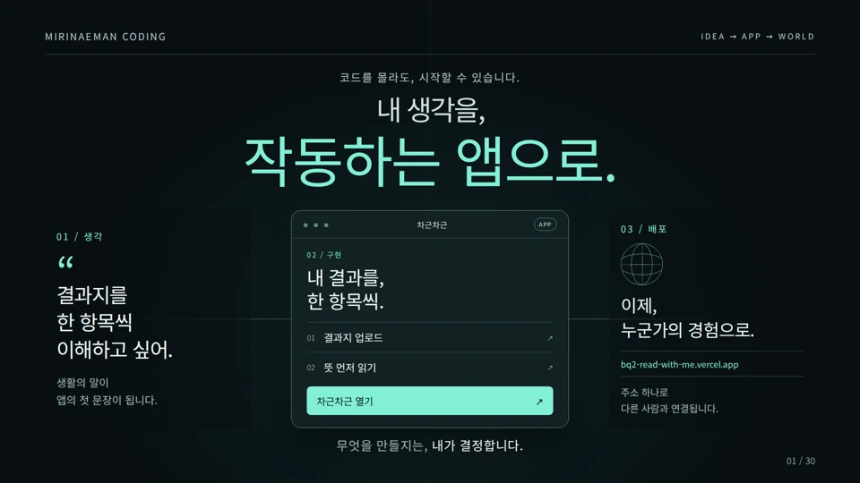

공포의 선풍기 · 두 개의 시선
선풍기를 조립하고 실제로 남은 나사에서 시작된 생활 호러. 같은 노래 위에 서로 다른 편집을 얹은 V2와 V3를 같은 시점에서 비교하며, 구도·그림자·가림·몽타주가 만드는 불안을 경험한다.
작품 열기Open body
교수 · 저자 · 창작자 · 시스템 설계자Professor · Author · Creator · System Designer
AI에게 판단을 맡기지 않고,AI와 함께 메시지의 몸을 만드는 사람.I do not hand judgment to AI.I work with AI to give messages a body.
미디어융합 전공 공학박사 김준호는 음악, 영상, 출판, 제품, 연구와 사회적 가치를 하나의 인과관계로 연결합니다.Joonho Kim, Ph.D. in media convergence, connects music, video, publishing, products, research, and social value through one causal body.
미디어는 메시지의 몸이다.Media is the body of the message.
홈은 모든 내용을 쌓아놓는 곳이 아니라 각 관계로 들어가는 문입니다.The home page is a set of doors into distinct relationships, not a pile of every detail.
만드는 행위가 어떤 관계와 태도를 갖는지 보여줍니다.How acts of making embody relation and attitude.
생각과 주장이 기록과 증거의 몸을 갖습니다.Ideas and claims take on bodies of record and evidence.
기술과 창작이 나눔의 거리를 줄입니다.Technology and creation shorten the distance to sharing.
판단의 기준과 최종 책임이 한 사람의 태도를 드러냅니다.Criteria for judgment and final responsibility reveal the person behind the work.
노래, 슬라이드, 화면과 이야기가 배포로 끝나지 않고 다음 창작을 바꾸는 기억으로 축적됩니다.Songs, slides, screens, and stories accumulate as memory that changes the next creation.

선풍기를 조립하고 실제로 남은 나사에서 시작된 생활 호러. 같은 노래 위에 서로 다른 편집을 얹은 V2와 V3를 같은 시점에서 비교하며, 구도·그림자·가림·몽타주가 만드는 불안을 경험한다.
작품 열기Open body더 나은 내일을 위한 한밤의 약속. 장엄한 록발라드와 실사 이미지로 작은 다짐의 끝을 기다린다.
작품 열기Open body
사람이 뼈대를 세우고 AI가 흐름을 설계할 때, 메시지는 몸을 얻습니다.
작품 열기Open body원본을 확인하며 BQ2 결과를 한 항목씩 이해하고 질문을 남긴다.
작품 열기Open body
완전 초보가 자신의 판단을 PRD·개발·검증·배포까지 연결한다.
작품 열기Open body보고 싶어 와 놓고 집에 가고 싶다가도, 말없이 건넨 송편 하나에 잠깐 마음을 접는 추석.
작품 열기Open body